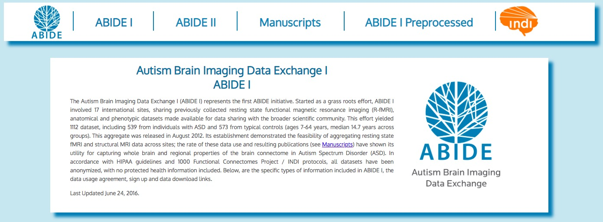
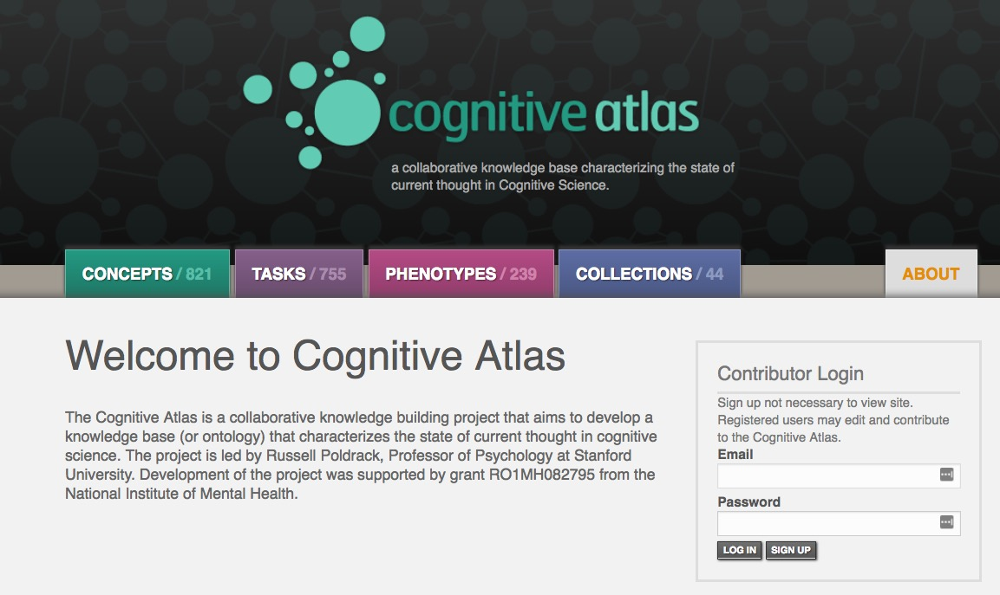
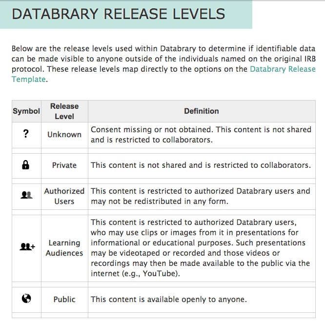

The promise of open developmental science
Rick O. Gilmore
2018-10-05 03:31:53


Developmental science is harder than physics


But…
Source: Ori Ossmy (NYU)
Cole, P.M., Gilmore, R.O., Scherf, K.S. & Perez-Edgar, K. (2016). The Proximal Emotional Environment Project (PEEP). Databrary. http://doi.org/10.17910/B7.248
Naigles, L. (2014). Children use syntax to learn verb meanings. Databrary. Retrieved October 4, 2018 from http://doi.org/10.17910/B7J01M.
The PLAY Project Wiki: https://dev1.ed-projects.nyu.edu/wikis/docuwiki/doku.php/landing
Studies are not underpowered
 

- Findings accumulate
- Theories are advanced, accepted, expanded, or rejected

Remaining barriers





“…psychologists tend to treat other peoples’ theories like toothbrushes; no self-respecting individual wants to use anyone else’s.”
(Mischel, 2009)
“The toothbrush culture undermines the building of a genuinely cumulative science, encouraging more parallel play and solo game playing, rather than building on each other’s directly relevant best work.”
(Mischel, 2009)
Share not your toothbrush…
But do share…
- Data
- & analysis code/scripts (R, Python, SPSS, SAS, …)
- Rawest possible (trial-level, individual, …)
- Displays (& code to generate)
- Protocols & procedures
- Video as a gold standard

Adolph, K. (2014). Excerpt Volume: Learning in the development of infant locomotion. Databrary. Retrieved October 5, 2018 from http://doi.org/10.17910/B7BC7T
Soderstrom, M. & Klassen, K. (2017). ManyBabies 1: bll-umanitoba. Databrary. Retrieved October 4, 2018 from http://doi.org/10.17910/B7.445
Where

With whom
- Public
- Researchers
- People you select & vet
With whom
- Public
- Risks of reidentification?
- Can you really anonymize?
- Researchers
- ICPSR, Databrary, & OpenNeuro
People you select & vet
When
- Soon after you collect it
- On manuscript submission
- On acceptance or publication
- End of grant
When I’m damn good and ready…
How

Wilkinson, M. D., Dumontier, M., Aalbersberg, I. J. J., Appleton, G., Axton, M., Baak, A., Blomberg, N., et al. (2016). The FAIR Guiding Principles for scientific data management and stewardship. Scientific data, 3, 160018. Retrieved from http://dx.doi.org/10.1038/sdata.2016.18
Share ethically
- Ask permission to share (especially for sensitive, identifiable data)
- (Gilmore & Nilsonne, 2017)
- Use template language: Databrary’s

https://www.databrary.org/resources/guide/investigators/release/release-levels.html
- Don’t promise to destroy data (but GDPR?)
- Don’t unduly restrict future reuses
“the principles of human subject research require an analysis of both risks and benefits…such an analysis suggests that researchers may have a positive duty to share data in order to maximize the contribution that individual participants have made.”
Share openly
- Without restriction on others’ reuse
- Without quid pro quo, pre-approval, or requirement of co-authorship
- With expectation of ethical use AND proper citation


“The advancement of detailed and diverse knowledge about the development of the world’s children is essential for improving the health and well-being of humanity. We regard scientific integrity, transparency, and openness as essential for the conduct of research and its application to practice and policy.”
SRCD Task Force on Scientific Integrity and Openness


https://github.com/gilmore-lab/DEVSEC2018/promise-of-open-dev-sci/
This talk was produced on 2018-10-05 03:31:53 in RStudio 1.1.453 using R Markdown and the reveal.JS framework. The code and materials used to generate the slides may be found at https://github.com/gilmore-lab/DEVSEC2018/promise-of-open-dev-sci/. Information about the R Session that produced the slides is as follows:
## R version 3.5.1 (2018-07-02)
## Platform: x86_64-apple-darwin15.6.0 (64-bit)
## Running under: macOS Sierra 10.12.6
##
## Matrix products: default
## BLAS: /System/Library/Frameworks/Accelerate.framework/Versions/A/Frameworks/vecLib.framework/Versions/A/libBLAS.dylib
## LAPACK: /Library/Frameworks/R.framework/Versions/3.5/Resources/lib/libRlapack.dylib
##
## locale:
## [1] en_US.UTF-8/en_US.UTF-8/en_US.UTF-8/C/en_US.UTF-8/en_US.UTF-8
##
## attached base packages:
## [1] stats graphics grDevices utils datasets methods base
##
## other attached packages:
## [1] revealjs_0.9
##
## loaded via a namespace (and not attached):
## [1] compiler_3.5.1 backports_1.1.2 magrittr_1.5 rprojroot_1.3-2
## [5] htmltools_0.3.6 tools_3.5.1 yaml_2.2.0 Rcpp_0.12.18
## [9] stringi_1.2.4 rmarkdown_1.10 knitr_1.20 stringr_1.3.1
## [13] digest_0.6.16 evaluate_0.11